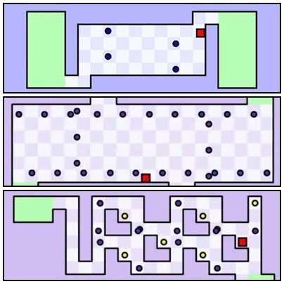

· 검사결과 ·
나와 어울리는 플래시 게임은
세상에서 가장 어려운 게임
(ISTP)

관찰력이 좋고 한계에 도전하는 것을 좋아하는 당신에게는 '세상에서 가장 어려운 게임'을 추천해드립니다!
게임 이름에서 알 수 있듯 매우 높은 난이도를 자랑하고 있는 게임입니다. 하지만 관찰력이 좋고 극악의 효율을 추구하는 당신에게 그 정도의 방해 패턴을 파악하는 것은 식은 죽 먹기 아닐까요?
게임 도중 어려운 방해 패턴이 당신을 괴롭힌다고 하더라도 당신의 끈질긴 도전만 있다면, 그 스테이지를 통과할 수 있는 완벽한 방법을 찾을 수 있을 것이라 생각합니다! 가만히 누워만 있어도 시간이 잘 가는 당신에게 승부욕을 자극하는 '세상에서 가장 어려운 게임'은 정말이지 당신의 시간을 순.삭 시킬 수 있는 게임이 아닐까요?
이 결과지를 보면서 '세상에서 가장 어려운 게임'이 하고싶어졌다면 지금 당장 시작해봅시다!
게임 이름에서 알 수 있듯 매우 높은 난이도를 자랑하고 있는 게임입니다. 하지만 관찰력이 좋고 극악의 효율을 추구하는 당신에게 그 정도의 방해 패턴을 파악하는 것은 식은 죽 먹기 아닐까요?
게임 도중 어려운 방해 패턴이 당신을 괴롭힌다고 하더라도 당신의 끈질긴 도전만 있다면, 그 스테이지를 통과할 수 있는 완벽한 방법을 찾을 수 있을 것이라 생각합니다! 가만히 누워만 있어도 시간이 잘 가는 당신에게 승부욕을 자극하는 '세상에서 가장 어려운 게임'은 정말이지 당신의 시간을 순.삭 시킬 수 있는 게임이 아닐까요?
이 결과지를 보면서 '세상에서 가장 어려운 게임'이 하고싶어졌다면 지금 당장 시작해봅시다!
검사자 총
73,591명 중
나와 같은 유형을 가진 사람은
2,346명 입니다.